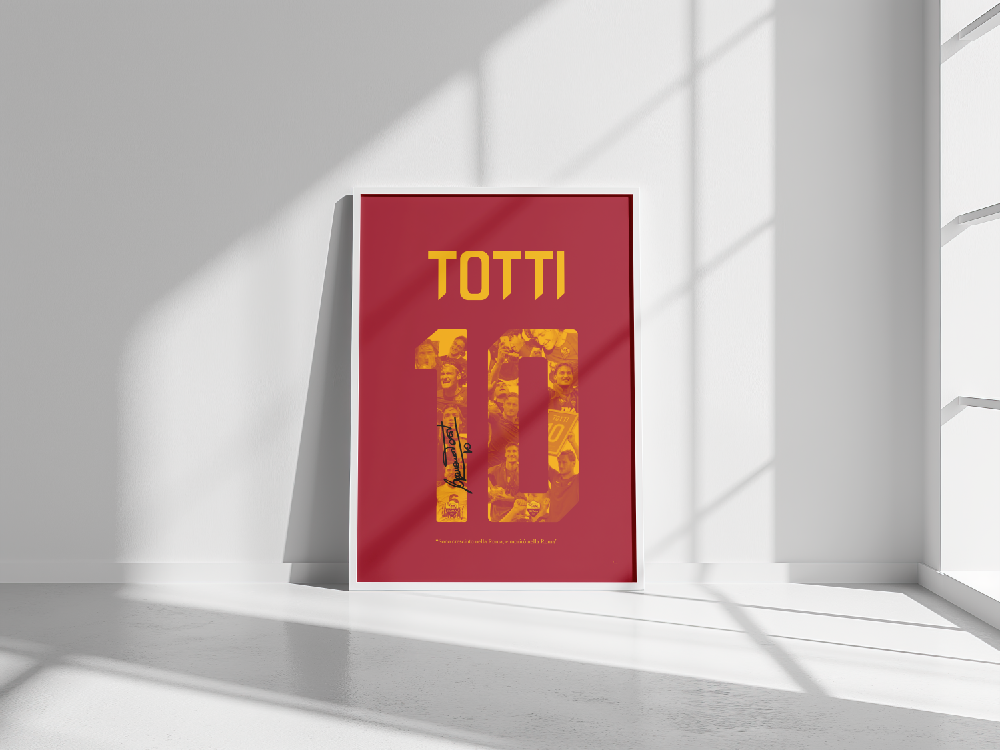

Totti 10
Poster
 Totti 10.webp)
L'eterno Capitano
Questo poster celebra Francesco Totti, simbolo indiscusso della Roma e del calcio mondiale.
Il progetto nasce dalla volontà di condensare un'intera carriera in un unico segno grafico potente:
il numero 10.
Il design non è solo una celebrazione estetica, ma un collage emozionale che racchiude momenti,
esultanze e la firma del Capitano, rendendo l'opera un pezzo di storia visiva per ogni tifoso.
Composizione e Colori
La palette cromatica è rigorosamente fedele ai colori sociali: il rosso pompeiano di sfondo fa risaltare il giallo ocra del testo e del numero, creando un contrasto caldo e istituzionale.
All'interno del numero 10 è stato inserito un collage di scatti storici, trattati con un filtro duotono che armonizza le diverse epoche ritratte, rendendo la composizione coerente e leggibile. Il font scelto per il nome "TOTTI" ha un taglio moderno e geometrico, che richiama la solidità di un monumento.
Significato Concettuale
Al centro, la firma originale di Francesco Totti funge da sigillo di autenticità, mentre in basso spicca la celebre frase: "Sono cresciuto nella Roma, e morirò nella Roma". Questa citazione definisce l'anima dell'intero progetto: l'appartenenza assoluta.
La scelta del minimalismo per lo sfondo serve a dare massima enfasi alla narrazione contenuta nel numero, trasformando una cifra numerica in un contenitore di ricordi collettivi.
